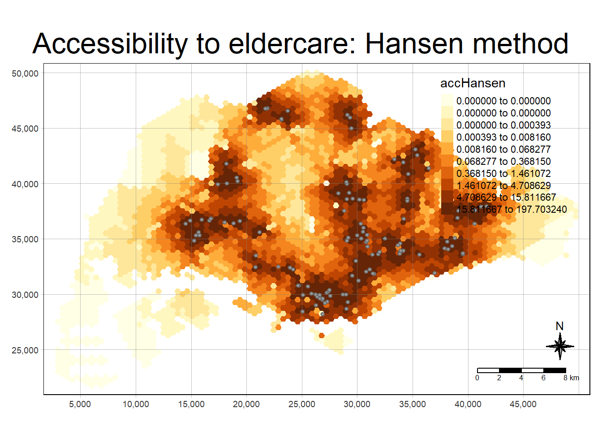
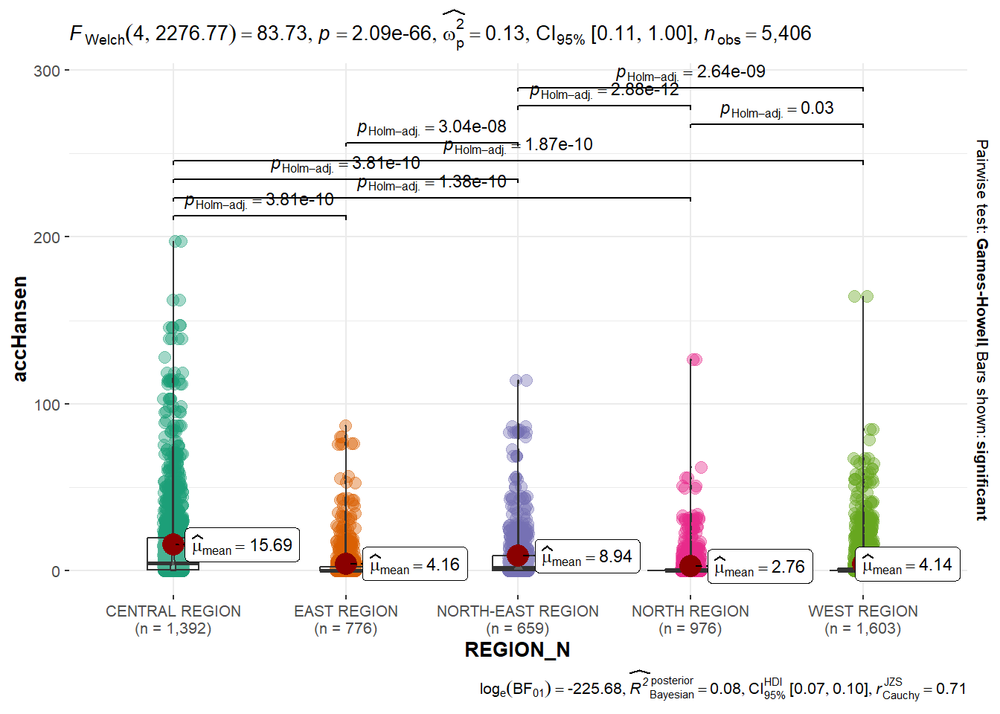

pacman::p_load(tmap, SpatialAcc, sf,
ggstatsplot, reshape2,
tidyverse, rstantools)In-class Exercise 9: Modelling Geographic of Accessibility
1 Import R package
2 Import the Data
The code chunk belows import three geospatial data sets from the data/geospatial sub-folder: MP14_SUBZONE_NO_SEA_PL, hexagons, and ELDERCARE, using st_read() and st_transform to convert to SVY21 coordinate projected system.
mpsz <- st_read(dsn = "data/geospatial",
layer = "MP14_SUBZONE_NO_SEA_PL") |>
st_transform(crs = 3414)Reading layer `MP14_SUBZONE_NO_SEA_PL' from data source
`C:\thuphuong1110\ISSS626-GAA\In-class_Ex\In-class_Ex09\data\geospatial'
using driver `ESRI Shapefile'
Simple feature collection with 323 features and 15 fields
Geometry type: MULTIPOLYGON
Dimension: XY
Bounding box: xmin: 2667.538 ymin: 15748.72 xmax: 56396.44 ymax: 50256.33
Projected CRS: SVY21hexagons <- st_read(dsn = "data/geospatial", layer = "hexagons") |>
st_transform(crs = 3414)Reading layer `hexagons' from data source
`C:\thuphuong1110\ISSS626-GAA\In-class_Ex\In-class_Ex09\data\geospatial'
using driver `ESRI Shapefile'
Simple feature collection with 3125 features and 6 fields
Geometry type: POLYGON
Dimension: XY
Bounding box: xmin: 2667.538 ymin: 21506.33 xmax: 50010.26 ymax: 50256.33
Projected CRS: SVY21 / Singapore TMeldercare <- st_read(dsn = "data/geospatial", layer = "ELDERCARE") |>
st_transform(crs = 3414)Reading layer `ELDERCARE' from data source
`C:\thuphuong1110\ISSS626-GAA\In-class_Ex\In-class_Ex09\data\geospatial'
using driver `ESRI Shapefile'
Simple feature collection with 120 features and 19 fields
Geometry type: POINT
Dimension: XY
Bounding box: xmin: 14481.92 ymin: 28218.43 xmax: 41665.14 ymax: 46804.9
Projected CRS: SVY21 / Singapore TMThe code chunk below uses read_cvs() of readr package to import OD_Matrix.csv into RStudio as a tibble data.frame called ODMatrix.
ODMatrix <- read_csv("data/aspatial/OD_Matrix.csv", skip = 0)Rows: 375000 Columns: 6
── Column specification ────────────────────────────────────────────────────────
Delimiter: ","
dbl (6): origin_id, destination_id, entry_cost, network_cost, exit_cost, tot...
ℹ Use `spec()` to retrieve the full column specification for this data.
ℹ Specify the column types or set `show_col_types = FALSE` to quiet this message.3 Data cleaning & updating attributes
Many redundant fields exist in both data tables eldercare and hexagons. The code chunks below excludes these redundant fields while adding two new fields: demand to the hexagons data table and capacity to the eldercare simple feature data frame. Both fields will be derived using the mutate() function from the dplyr package.
eldercare <- eldercare %>%
select(fid, ADDRESSPOS) %>%
mutate(capacity = 100)hexagons <- hexagons %>%
select(fid) %>%
mutate(demand = 100)For this hands-on exercise, a constant value of 100 is used for both the capacity and demand fields. In practice, actual demand for the hexagons and capacity for the eldercare centers should be applied.
3.1 Tidy Distance matrix
The imported ODMatrix organised the distance matrix columnwise. However, most of the modelling packages in R is expecting a matrix look where The rows represent origins (also know as from field) and the columns represent destination (i.e. also known as to field.).
The pivot_wider() function from the tidyr package was used to transform the O-D matrix from a long format to a wide format.
distmat <- ODMatrix %>%
select(origin_id, destination_id, total_cost) %>%
pivot_wider(names_from = destination_id, values_from = total_cost)%>%
select(c(-c('origin_id')))As SVY21 projected coordinate system is used, the distance is measured in metre. The code chunk below convert the unit measurement from metre to kilometre.
distmat_km <- as.matrix(distmat/1000)4 Model and Visualize Accessibility using Hansen Method
4.1 Compute Hansen’s accessibility
Now we are ready to compute Hansen’s accessibility using the ac() function from the SpatialAcc package. Before proceeding, it’s advisable to review the function’s arguments at least once to ensure that all required inputs are available.
The code chunk below calculates Hansen’s accessibility, using ac() from the SpatialAcc package, and saves the output in a data frame called acc_Hansen using the data.frame() function.
acc_Hansen <- data.frame(ac(hexagons$demand,
eldercare$capacity,
distmat_km,
#d0 = 50,
power = 2,
family = "Hansen"))The default field name is messy, we rename it to accHansen using the code chunk below.
colnames(acc_Hansen) <- "accHansen"Next, we convert the data table into tibble format by using the code chunk below.
acc_Hansen <- as_tibble(acc_Hansen)Lastly, bind_cols() of dplyr is used to join the acc_Hansen tibble data frame with the hexagons simple feature data frame. The output is saved in hexagon_Hansen.
hexagon_Hansen <- bind_cols(hexagons, acc_Hansen)4.2 Visualize Hansen’s accessibility
First we extract the extend of hexagons simple feature data frame by using st_bbox() of sf package.
mapex <- st_bbox(hexagons)The code chunk below uses a collection of mapping fucntions of tmap package to create a high cartographic quality accessibility to eldercare centre in Singapore.
tm_shape(hexagon_Hansen,
bbox = mapex) +
tm_fill(col = "accHansen",
n = 10,
style = "quantile",
border.col = "black",
border.lwd = 1) +
tm_shape(eldercare) +
tm_symbols(size = 0.1) +
tm_layout(main.title = "Accessibility to eldercare: Hansen method",
main.title.position = "center",
main.title.size = 2,
legend.outside = FALSE,
legend.height = 0.45,
legend.width = 3.0,
legend.format = list(digits = 6),
legend.position = c("right", "top"),
frame = TRUE) +
tm_compass(type="8star", size = 2) +
tm_scale_bar(width = 0.15) +
tm_grid(lwd = 0.1, alpha = 0.5)
4.3 Statistical Graphic
hexagon_Hansen = st_join(hexagon_Hansen, mpsz,
join = st_intersects)ggbetweenstats(
data = hexagon_Hansen,
x = REGION_N,
y = accHansen,
type = 'p'
)